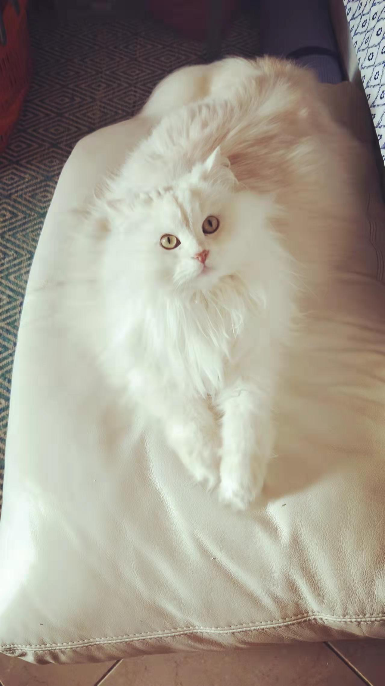
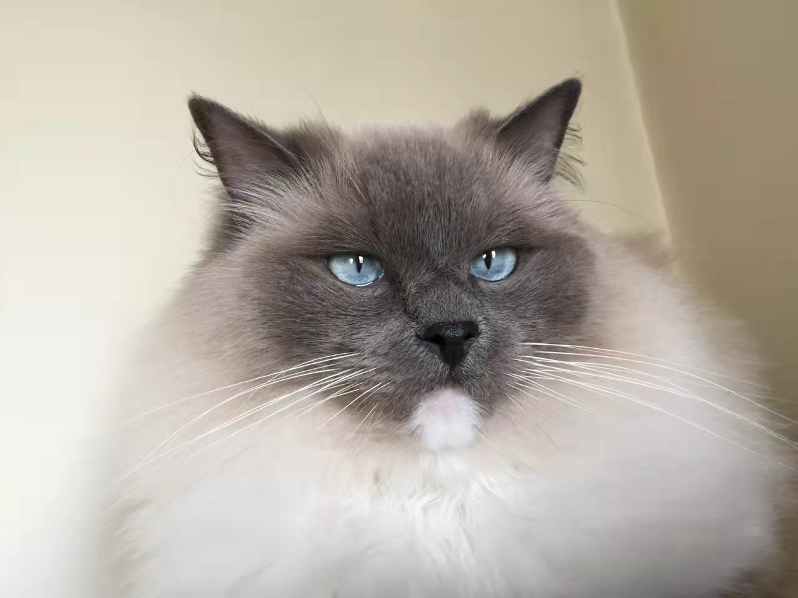

ABOUT ME & MY LOVE FOR CATS
Welcome to my Blog! And Thanks for taking time to reading this!
MY CATS: MEET PILOT & KNIGHT
Where should I start? Well, of course it would be with my cats! And YES, I am one of the official Crazy Cat lady 2.0. But don't get me wrong, it is actually my cats who allowed me to appreciate all animals regardless of what kind or sizes they are. All of them are, suprisingly, quite special!
I actually have two cats, namely Pilot, who is currently a 7yrs old Persian Ragdoll. And as for Knight, he is a 3 yrs old cheeky Ragdoll, as you can see in the photos. Pilot generally prefers to sleep all with occassional Bird watching on a daily basis in relative demure tone. Where as Knight, on the other hand, genrally prefers his daily Gym work out routines like running around the house as if we were chasing him.
This is Pilot as shown from the above in white. And the picture below would be a picture of Knight. It's really because of him that I'm currently pending my thoughts of getting a Fish bowl, just so I don't have to get a new fish every weekend.
LET'S CONNECT!
If you are also a animal lover, then I would love to hear from you, not just to get to knowing you but also to be able to hear from your stories as well!
Please feel free to contact me on the following link provided & Have a great day!